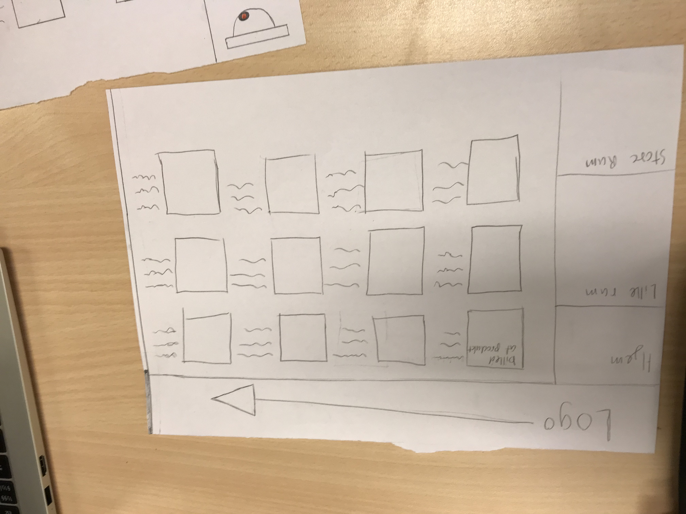
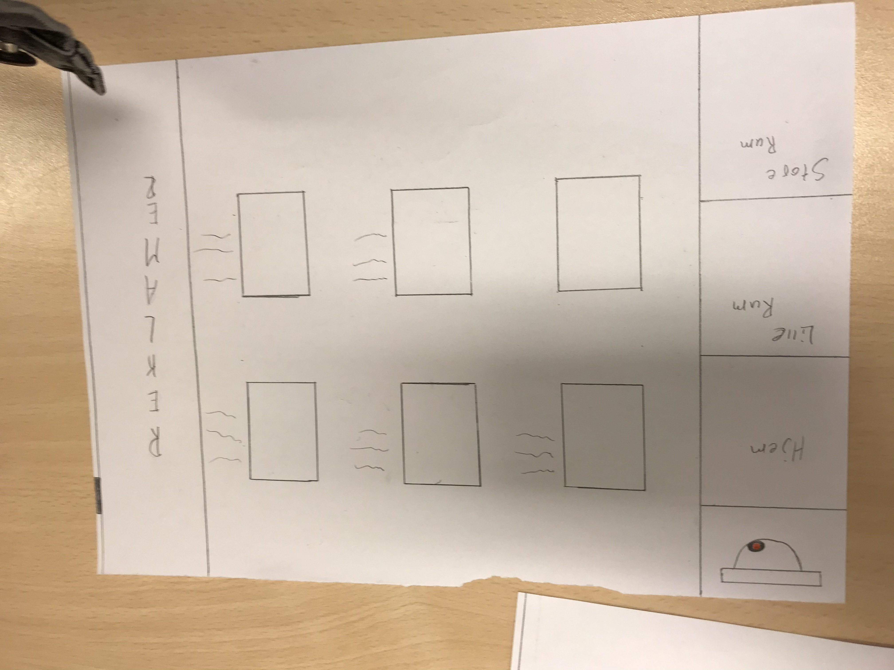
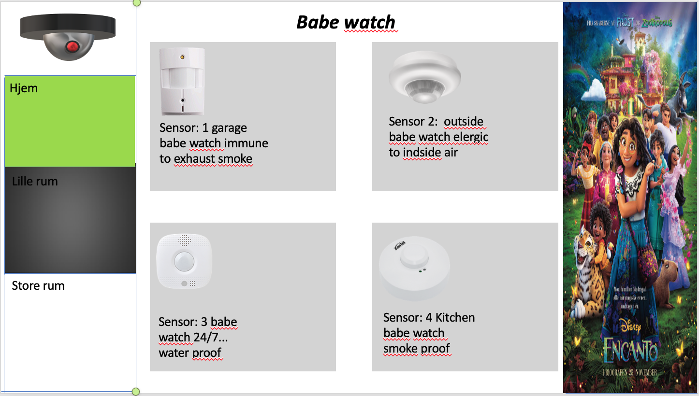

Informatik Noter
HTML er til at difinere indholdet på en hjemmeside tror jeg nok
Det står for: Hyper Text Markup Language
Her er eine link:
https://www.w3schools.com/html/html_intro.asp
CSS bruges til at få hjemmesider til at se pænere ud.Her kan layoutet laves om og mange andre ting.
Det står for: Cascading style sheet
Her er eine link:
https://www.w3schools.com/Css/css_intro.asp
RGB er farver.
Det står for "Red, Green, Blue" hvilket er de 3 faver man bruger til at blande næsten alle farver.
Her er eine link:
https://www.w3schools.com/colors/colors_rgb.asp
Der er 5 principper:
1. Contrast
2. Repetition
3. Alignment
4. Proximity
5. White space
Betydning: Graphic Design Principles
Her er eine link:
https://w3-lab.com/5-core-principles-graphic-design-rules/
DOM er .
HTML og CSS er fint til at sætte en hjemmeside op, men for at manipulere den og gøre den mere interaktiv skal man bruge DOM(Document object model). Det er her hvor javascript kommer ind i billedet, da DOM er bygget på Javascript. DOM er bare et interface der gør det lettere for programmører at manipulere med hjemmesider med javascript..
Her er eine link:
https://www.w3schools.com/js/js_htmldom.asp
Her er en liste af forskellige metoder:
1) Interviews (snak med brugerne)
2) Observations (kig på brugerne)
3) Surveys (giv brugerne spørgeskemaer)
4) User Testing (få brugerne til at afprøve produktet)
5) Inspection Methods (kig selv på produktet, som om at du var en bruger)
Console.log er til at få din console til at sige en comand eller bare noget tekst.
Man kan fx. skrive console.log("Hello world");
Dette gør så at den skriver det i console når siden starter op.
Dette kan være brugbart i de stadier hvor man leder efter fejl eller lignedne.
En array er en speciel variabel som can have mere end en værdig.
Man bruger det for det meste hvis man har mange variabler så i stedet for at have en lang liste af næsten den samme kode, kan man samle dem i 1.
Her er eine link:
https://www.w3schools.com/js/js_arrays.asp
Vi startetede ud med at skulle finde et produckt som vi kunne lave digitalt. Vi endte med at have et fokus på skolens strøm forbrug med lamper.
Vi talte det til at der var omkring 15 lamper i vores lokale, vi valgte så at sige at hvert lokale havde ca. 12 lamper. Vi kiggede på lectio og kom frem til at der var ca. 70 lokaler at tage højde for. efter følgende talte vi så lamperne i gangene og i salende.
Vi fandt frem til at en pære på skolen brugte ca. 18 watt i timen. 1kW koster 2,4 kroner, hvilket vil sige at en lampe bruger .... i timen. vi går ud fra at lamperne er tændt omkring 12 timer om dagen i 200 dage. når vi lægger alle talene sammen for vi en pris på over 110.000kr om året.
Vores har vi så tænkt os skulle være, en hjemmeside hvor du kan købe sensore til gange og lokaler på skolen. disse sensore skulle så gøre at lyset er tændt når der er nogen, og det ellers er slukket
Her har vi så lavet en skecth af hjemmesiden


Vi har derfter også lavet et senarie som muligvis kan bruges
En skole har 70 lokaler med gennemsnitlig cirka 12 lamper i et lokale, og en masse andre på gange og fællesrum. En gennemsnitlig lampe bruger cirka 4 øre i timen. Skolen er ikke så god til at for slukket deres lamper, så de kan nemt være tændt i 12 timer på en skole dag. Om året ender det med at koste en masse penge.
Vi skulle så begynde at lave en prototybe af vores ide. Vi mente ikke at vi kunne nå at lave en hjemmeside med den tid vi have, så i stedet for lavet vi et power point som vi mente det skulle se ud.

Her er vores flappybird forsøg.